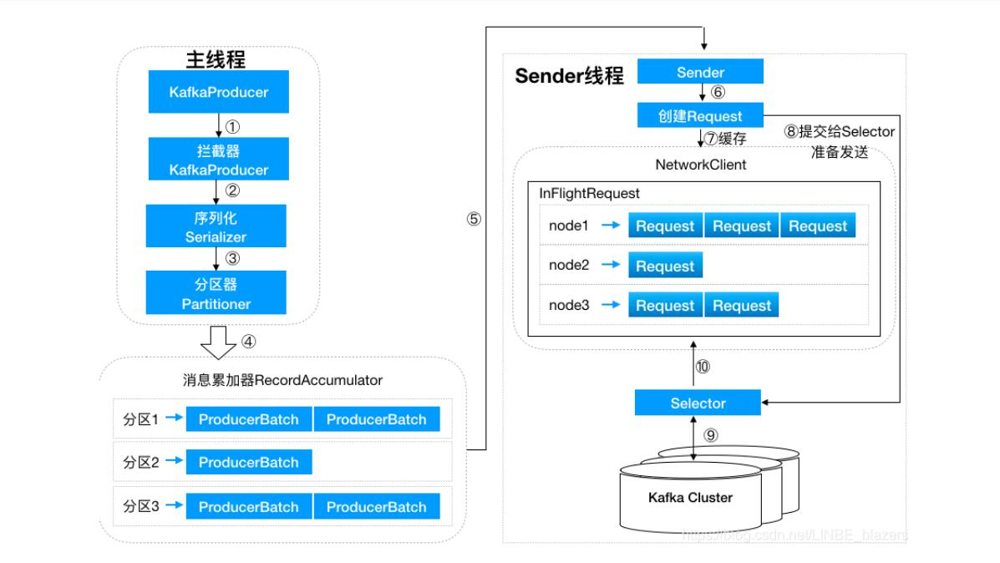

一个有名的多分区多副本且基于ZooKeeper协调的分布式消息系统，高吞吐、可持久化、可水平扩展、支持流数据处理等多种特性被使用。
- 消息系统：Kafka和传统的消息系统都具备系统解耦性、冗余存储、流量削峰、缓冲、异步通信、扩展性、可恢复性等功能。Kafka还提供大多数消息系统难以实现的消息顺序性保障和回溯消费功能
- 存储系统：Kafka把消息持久化到磁盘，相比于其他基于内存存储的系统而言，有效地降低了数据丢失的风险。也正是得益于Kafka的消息持久化功能和多副本机制，我们可以吧Kafka作为长期对的数据存储系统来使用。
- 流式处理平台：Kafka不仅为每个流行的流式处理框架提供了可靠的数据来源，还提供了一个完整的流式处理类库
第一章初识Kafka
基本概念
- Producer：生产者，也就是发送消息的一方，生产者负责创建消息，然后将其投递到Kafka中
- Consumer：消费者，也就是接收消息的一番。消费者连接到Kafka上并接收消息，进而进行相应的业务逻辑处理
- Broker：服务代理结点：对于Kafka而言，Broker可以简单的看做一个独立的Kafka服务结点或Kafka服务实例。
- 主题：Kafka中的消息以主题为单位进行归类，生产者负责将消息发送到特定的主题，而消费者负责订阅主题并进行消费
- 分区：一个分区只属于单个主题，同一主题下不同分区包含的消息是不同的，分区在存储层面可以看做一个可追加的日志文件，消息在被追加到分区日志文件的时候都会分配一个特定的偏移量。
- Offset偏移量：offset是消息在分区中的唯一标识，Kafka通过它来保证消息在分区内的顺序性，不过offset并不跨越分区，Kafka保证分区有序而不是主题有序
- 副本因子：副本个数
- AR：分区内所有副本
- ISR:所有与leader副本保持一定程度同步的副本
- OSR:与leader副本同步滞后过多的副本
- HW:高水位：标识一个特定的offset，消费者只能拉取到这个offset之前的消息
- LEO: Log End Offset 标识当前日志文件中下一条待写入消息的offset
生产与消费
1 | ./bin/kafka-topics.sh --zookeeper localhost:2181/kafka --create --topic topic-demo --replication-factor 3 --partitions 4 |
第二章 生产者
步骤：
- 配置生产者客户端参数及创建相应的生产者实例
- 构建待发送的消息
- 发送消息
- 关闭生产者实例
1 | public static Properties initConfig() { |
消息对象ProducerRecord 并不是单纯意义上的消息，包含了多个属性
1 | public class ProducerRecord<K, V> { |
KafkaProducer是线程安全的，可以在多个线程中共享单个KafkaProducer实例，也可以将KafkaProducer实例进行池化来供其他线程调用
构建ProducerRecord 对象，topic属性和value属性是必填，其他选填
发送消息
发后即忘：send方法不指定Callback，性能最高，可靠性最差
同步：send方法利用返回的Future对象，阻塞等待Kafka响应
异步：send方法，指定Callback回调函数
可重试异常和不可重试异常
对于可重试异常，如果配置了retries参数，那么只要在规定的重试次数内自行恢复，就不会抛出异常
对于不可重试的异常，则直接抛出异常，不进行重试
对于同一个分区而言，如果消息record1先与record2发送，那么KafkaProducer就可以保证对应的callback1先与callback2调用
序列化器
生产者需要使用序列化器将对象转换成字节数组，才能通过网络发送给Kafka，在对端消费者使用反序列化器把Kafka转换成相应的对象
序列化器实现了org.apache.kafka.common.serialization.Serializer接口
一般要实现
1 | public void configure(Map<String, ?>configs,boolean isKey) |
可以使用Avro、JSON、Thrift、Protobuf、Protostuff等通用工具来实现
分区器
1 | public int partition(String topic, Object key,byte[] keyBytes, Object Value, byte[] valueBytes,Cluster cluster); |
如果ProducerRecord中指定了Partition字段，则不需要分区器，partition字段就是要发往的分区号
如果没有指定分区器，就需要分区器根据key字段来计算partition值。Kafka的默认分区器实现了 xx.Partitioner接口，接口中有partition方法和close方法
默认分区器会判断key不为null，则对key进行哈希，最终根据得到的哈希值来计算分区号，拥有相同key的消息会被写入同一个分区。如果key为null，那么消息会以轮询的方式发往主题内的某一个可用分区
自定义分区器也只需实现上述接口即可
生产者拦截器
消息发送前做一些过滤，修改等等
需要自定义实现ProducerInterceptor接口
KafkaProducer会在消息被应答之前或消息发送失败时调用拦截器的onAcknowledgement方法，优于用户设定的Callback之前执行。
1 | public ProducerRecord<K, V> onSend(ProducerRecord<K, V> record); |
可以指定一个拦截链，KafkaProducer按照interceptor.classes参数配置的拦截器的顺序来一一执行（各个拦截器按逗号隔开）
整体架构

生产者客户端有两个线程，主线程和Sender线程。主线程生产消息经过拦截器、序列化器、分区器缓存到消息累加器中，Sender线程从RecordAccumulator中获取消息并发往Kafka中
buffer.memory： 指定RecordAccumulator缓存的大小
max.block.ms：指定生产者发送太快，缓冲区满了，阻塞的最大时间
RecordAccumulator为每个分区维护一个双端队列，队列内容为ProducerBatch，Producer为一个至多个ProducerRecord
消息在网络上传输是以字节传输的，发送之前要创建内存区域。RecordAccumulator内部还有一个BufferPool，管理ByteBuffer
batch.size 指定ByteBuffer的大小